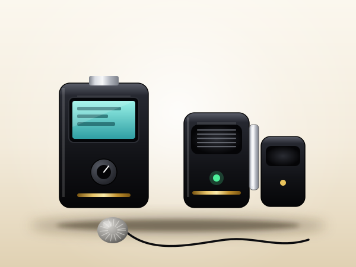

Give lessons with the keyboard
The gift that works best is the instrument plus someone to learn from. Give the keyboard, and add a gift certificate for first lessons with me, Dr. Maria Pisarenko, a concert pianist who teaches adults online, wherever they live.
Give a lesson gift certificate See private online lessons
Lesson prices increase January 1, 2027; gift certificates bought by December 31 keep today's price.
Recording is the quickest way to hear yourself as a listener does, and it is how an adult learner sends a clip for feedback. A phone is enough to begin. When you want a better sound, there are three paths: a handheld recorder that does everything in one box, a USB microphone that plugs into a computer, or a pair of condenser microphones through an audio interface. I list each by what its listing states.
Why trust a concert pianist's picks?
I recommend this gear because it is what my adult students need to work through my free 41-lesson course and, later, to use with my upcoming method books. I am a concert pianist and a university piano professor, and these are the kinds of tools I look at first when a student asks what to buy.
AKGMicrophone
Perception 170 Instrument Microphone
A small instrument microphone from AKG. The AKG Perception 170 Instrument Microphone is one of my careful first-budget picks for this list.
I suggest it for a first instrument microphone on a limited budget.
See it on AmazonShureMicrophone
SM57 Dynamic Instrument Microphone
A dynamic cardioid instrument microphone with an XLR connection. The Shure SM57 Dynamic Instrument Microphone is one of my careful first-budget picks for this list.
I suggest it for a rugged microphone for amplified keyboard or speech.
See it on AmazonZoomPortable recorder
H1 Essential Recorder
A clip-free recorder for musicians, podcasters and content creators. The Zoom H1 Essential Recorder is one of my careful first-budget picks for this list.
I suggest it for a simple first recorder for a quick clip.
See it on AmazonTascamPortable recorder
DR-05XP Handheld Recorder
A 32-bit float handheld recorder with a USB-C audio interface. The Tascam DR-05XP Handheld Recorder is one of my careful first-budget picks for this list.
I suggest it for an easy pocket recorder for practice clips.
See it on Amazon
M-AudioAudio interface
M-Track Duo USB Audio Interface
A USB interface with dual XLR, line and DI inputs. The M-Audio M-Track Duo USB Audio Interface is one of my careful first-budget picks for this list.
I suggest it for a compact first interface for two sources.
See it on AmazonFIFINEUSB microphone
T669 USB Condenser Microphone
USB condenser mic for recording yourself. I ask my students to send me a recording, and a clean, simple setup like this is all a teacher needs to hear your touch.
I suggest it for recording yourself on a computer to send me a clip for feedback.
See it on AmazonRODEMicrophone
NT1 5th Gen Condenser Microphone
A studio condenser that connects by XLR or by USB-C straight to a computer. The RODE NT1 5th Gen Condenser Microphone is one of my mid-range picks for this list.
I suggest it for recording your piano and your voice for lessons.
See it on AmazonRODEMicrophone
NT1 Signature Condenser Microphone
A large-diaphragm condenser with a shock mount, pop filter and XLR cable included. The RODE NT1 Signature Condenser Microphone is one of my mid-range picks for this list.
I suggest it for a first studio microphone, with an interface.
See it on AmazonRODEMicrophone
M5 Matched Pair Condenser Microphones
A matched pair of small-diaphragm cardioid condensers. The RODE M5 Matched Pair Condenser Microphones is one of my mid-range picks for this list.
I suggest it for stereo recording of an acoustic or digital piano.
See it on AmazonsE ElectronicsMicrophone
sE7 Matched Stereo Pair
A stereo pair listed for overheads, pianos and more. The sE Electronics sE7 Matched Stereo Pair is one of my mid-range picks for this list.
I suggest it for stereo recording of a piano.
See it on AmazonLEWITTMicrophone
LCT 040 Match Condenser Microphones
Small-diaphragm condensers with excellent transient response for acoustic instruments. The LEWITT LCT 040 Match Condenser Microphones is one of my mid-range picks for this list.
I suggest it for clear recordings of acoustic sound.
See it on AmazonTascamPortable recorder
DR-40XP Handheld Recorder
A 4-channel 32-bit float handheld recorder with a USB-C audio interface. The Tascam DR-40XP Handheld Recorder is one of my mid-range picks for this list.
I suggest it for a pianist who records recitals.
See it on AmazonUniversal AudioAudio interface
Volt 1 USB Audio Interface
A one-input USB audio interface. The Universal Audio Volt 1 USB Audio Interface is one of my mid-range picks for this list.
I suggest it for a first interface for one microphone.
See it on AmazonUniversal AudioAudio interface
Volt 276 USB Audio Interface
A USB audio interface with a built-in 76 compressor and a vintage microphone preamp. The Universal Audio Volt 276 USB Audio Interface is one of my mid-range picks for this list.
I suggest it for recording a piano with a warmer front end.
See it on AmazonYamahaAudio interface
2-in/2-out USB-C Audio/MIDI Interface
A 2-in, 2-out USB-C interface with 32-bit/192 kHz support and combo inputs. The Yamaha 2-in/2-out USB-C Audio/MIDI Interface is one of my mid-range picks for this list.
I suggest it for a Yamaha piano owner who records audio and MIDI.
See it on Amazon
ShurePhone microphone
MV88+ Video Kit Stereo Microphone
A stereo condenser that connects directly to a compatible iPhone, iPad or Android phone. I recommend it for lessons and performances where you speak to a camera, not for recording the piano.
I suggest it for filming a lesson or a clip on a phone.
See it on AmazonFocusriteAudio interface
Scarlett Solo 3rd Gen USB-C Interface
USB-C interface. I recommend it for a student ready to grow a home recording setup beyond one simple microphone.
I suggest it for a student ready to grow a home recording setup with other microphones.
See it on AmazonFocusriteAudio interface
Scarlett Solo 4th Gen USB-C Interface
Focusrite Scarlett Solo 4th Gen USB-C Interface: uSB-C interface. The Focusrite Scarlett Solo 4th Gen USB-C Interface is one of my mid-range picks for this list.
I suggest it for a student ready to grow a home recording setup with other microphones; this one is the Focusrite Scarlett Solo 4th Gen USB-C Interface.
See it on AmazonAudio-TechnicaUSB microphone
AT2020USB-X Cardioid USB Microphone
Cardioid USB condenser. The Audio-Technica AT2020USB-X Cardioid USB Microphone is one of my mid-range picks for this list.
I suggest it for recording yourself on a computer to send me a clip for feedback; this one is the Audio-Technica AT2020USB-X Cardioid USB Microphone.
See it on AmazonZoomPortable recorder
H4 Essential Handheld Recorder
Handheld recorder with 32-bit float. The Zoom H4 Essential Handheld Recorder is one of my mid-range picks for this list.
I suggest it for recording a whole practice session or lesson without a computer; this one is the Zoom H4 Essential Handheld Recorder.
See it on AmazonZoomPortable recorder
H1n Portable Recorder
Handheld stereo recorder. The Zoom H1n Portable Recorder is one of my mid-range picks for this list.
I suggest it for recording a whole practice session or lesson without a computer; this one is the Zoom H1n Portable Recorder.
See it on AmazonRODEMicrophone
NT5 Matched Pair Microphones
A matched pair of small-diaphragm condensers with 1/2-inch cardioid capsules. The RODE NT5 Matched Pair Microphones is one of my premium picks for this list.
I suggest it for recording a piano for a school or channel.
See it on AmazonShureMicrophone
SM81-LC Instrument Microphone
A rugged cardioid condenser instrument microphone that needs phantom power. The Shure SM81-LC Instrument Microphone is one of my premium picks for this list.
I suggest it for a teacher recording instruments in a room.
See it on AmazonZoomPortable recorder
H6 Essential Handheld Recorder
A handheld recorder for musicians, podcasters and filmmakers. The Zoom H6 Essential Handheld Recorder is one of my premium picks for this list.
I suggest it for recording a whole practice session without a computer.
See it on AmazonZoomPortable recorder
H6 Studio Handy Recorder
A handy recorder with 32-bit float audio for musicians and filmmakers. The Zoom H6 Studio Handy Recorder is one of my premium picks for this list.
I suggest it for a teacher who records lessons and recitals.
See it on AmazonSteinbergAudio interface
UR22C Studio Bundle
A 2-channel USB 3.0 interface bundled with Cubase AI and Cubasis LE. The Steinberg UR22C Studio Bundle is one of my premium picks for this list.
I suggest it for a student who wants software and an interface in one box.
See it on AmazonFocusriteAudio interface
Scarlett 2i2 4th Gen USB-C Interface
Two-input USB-C interface. The Focusrite Scarlett 2i2 4th Gen USB-C Interface is one of my premium picks for this list.
I suggest it for a student ready to grow a home recording setup with other microphones; this one is the Focusrite Scarlett 2i2 4th Gen USB-C Interface.
See it on AmazonZoomPortable recorder
H5 4-Track Handheld Recorder
4-track handheld recorder. A recorder you can switch on at the piano makes the recording habit easy, and a recording is the fastest way to hear what a teacher hears.
I suggest it for recording a whole practice session or lesson without a computer.
See it on AmazonAudio-TechnicaUSB microphone
AT2020USB+ Cardioid USB Microphone
Cardioid USB condenser mic. The Audio-Technica AT2020USB+ Cardioid USB Microphone is one of my premium picks for this list.
I suggest it for recording yourself on a computer to send me a clip for feedback; this one is the Audio-Technica AT2020USB+ Cardioid USB Microphone.
See it on Amazon
How do I record piano well at home?
Start with where the sound comes from. A digital piano can go straight into a recorder or an interface by cable, with no microphone at all. An acoustic piano needs microphones: a matched pair of small-diaphragm condensers, placed a little above and in front of the instrument, gives a natural stereo picture. Record one short passage, listen back with headphones, and move the microphones until it sounds like what you hear sitting at the keys.
Keep the setup small
A handheld stereo recorder is the simplest path to a clean clip. When you are recording every week, add an interface and a pair of condensers. The best setup is the one you will use.
What do I need to record piano at home?
A recorder or microphones for sound, and a phone or a camera for video. Begin with a handheld recorder or a USB microphone, then add an interface and a pair of condensers when you are recording every week.
What is an audio interface?
A box that turns the signal of a microphone or instrument into digital audio for your computer, and sends the sound back to your headphones. It lets you use professional XLR microphones.
Do I need two microphones for piano?
Two, as a matched pair, give a stereo image, which is how most pianists want a piano recorded. One microphone works for a simple clip.
Can I send a recording to my teacher?
Yes. A clear clip is all I need for feedback, and my feedback is free: send me a video of your playing.
Shopping outside the US? Do these links work in the UK, Canada, Australia or Europe?
Yes. The links go to Amazon.com and open your local Amazon store when the model is sold there: the UK, Canada, Australia, Germany, France, Italy, Spain, the Netherlands, Poland, Sweden and Singapore. Models, voltages and plugs differ by country, so on your local listing check for the 230-volt or UK-plug version of a digital piano or a suitable mains adapter, and check that the sustain pedal, bench (keyboard stool) or keyboard stand you want is sold in your country. If a model is not sold locally, the page will say so.